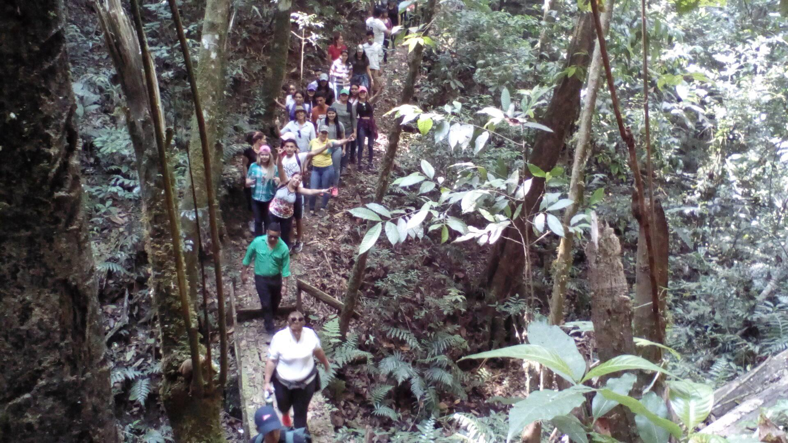
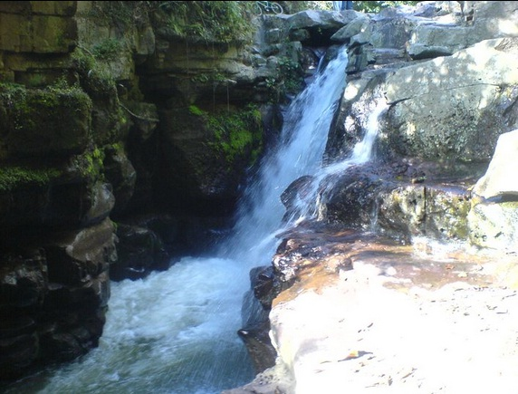

Actividades en La Muralla
Vive experiencias únicas rodeado de naturaleza. Estas son algunas de las actividades que puedes disfrutar en el Parque Nacional La Muralla:

Senderismo
Recorre senderos rodeados de bosque nublado y descubre miradores naturales.

Observación de Aves
Ideal para birdwatchers. Observa especies únicas y en peligro de extinción.

Visita a Cascadas
Explora y báñate en las refrescantes aguas de nuestras cascadas escondidas.

Talleres Ambientales
Actividades para grupos escolares y visitantes interesados en conservación.